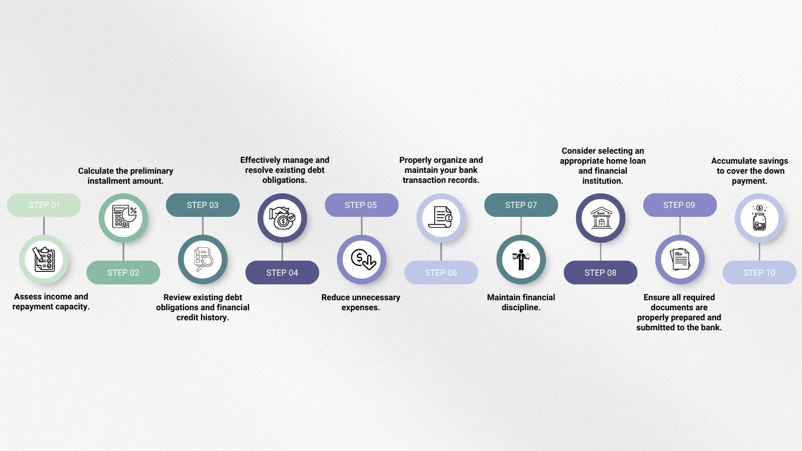
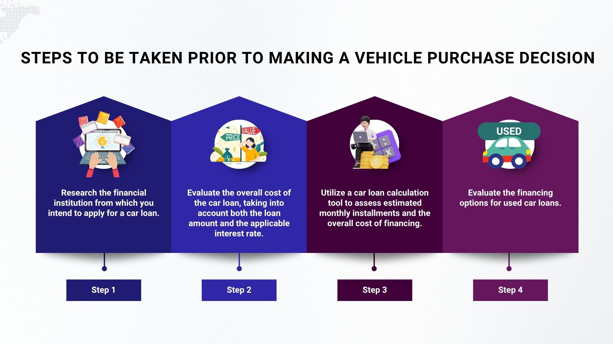
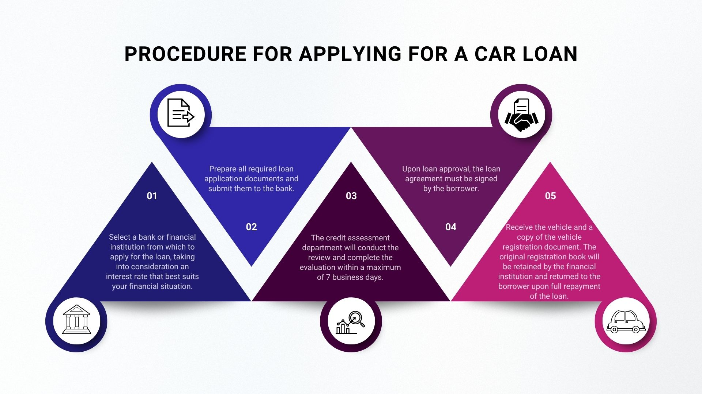

Home Loan Preparation Guide: Achieve Your Dream Home
Owning a home is a dream for many, but applying for a home loan can seem complex and challenging. This article outlines 10 key steps to help you prepare effectively, increase your chances of loan approval, and smoothly step into owning your dream home.

1. Assess Income and Repayment Capacity
Start by evaluating your financial status:
- Determine net income: For salaried employees, income is usually clear, but for freelancers, business owners, or the self-employed, summarize annual income to find the true monthly average.
- Evaluate monthly repayment capacity: Consider income after essential expenses to understand how much you can afford for a home loan repayment.
2. Calculate Preliminary Repayment Amount
Use a loan calculator from a bank, such as GHB, to estimate your monthly repayment:
- Enter key details: Specify the loan amount, desired repayment period, and interest rate as per the bank's announcement.
- Calculate: Get a preliminary monthly repayment figure, which is crucial for long-term financial planning.
3. Review Debt Obligations and Credit History
Before applying, thoroughly review your debt history:
- Summarize monthly debts: List all debts you need to repay each month.
- Categorize debts: Divide into long-term debts (over 1 year, e.g., car loans) and short-term debts (e.g., credit card debt, personal loans), aiming to clear short-term debts before applying.
- Check Credit Bureau: Review your repayment history to ensure no overdue payments, overlooked debts, or unauthorized debts exist. A good credit history builds trust with the bank.
4. Manage and Clear Debts
Clearing debts before applying is highly important:
- Pay off unnecessary debts: Focus on short-term debts or those not benefiting your future, such as credit card debt or personal loans.
- Reduce debt accumulation: Closing unused credit cards can limit further debt.
- Benefits of clearing debts:
- Increases loan eligibility: Enhances your monthly repayment capacity.
- Builds credibility: Banks recognize your debt management discipline.
- Improves liquidity: Reduces regular expenses, leaving more disposable income.
5. Reduce Unnecessary Expenses
Identify "money leaks" and cut extravagant spending:
- Control irregular expenses: Such as dining out, entertainment, socializing, or unnecessary repairs.
- Boost loan chances: Reducing expenses increases savings, improves liquidity, and reflects good financial discipline to banks.
6. Organize Bank Statements
Bank statements are key evidence for banks to assess your income, spending habits, and income sources:
- For salaried employees: Provide pay slips and bank statements showing consistent salary deposits, avoiding zero balances, and demonstrating regular savings.
- For freelancers/business owners: Consistent income deposits for at least 6-12 months before applying are crucial, along with business income-expense records and tax compliance to verify income.
7. Maintain Financial Discipline
Demonstrating strong financial discipline significantly boosts your credibility with banks:
- Save regularly: Set a monthly savings goal or save with each income.
- Control spending: Keep monthly expenses stable without large fluctuations.
- Invest additionally (if possible): Assets like stocks or long-term deposits show money management skills.
8. Choose Suitable Home Loan and Bank
Research and compare home loan products from various banks:
- Benefits/privileges: Check for special benefits based on your profession or company (e.g., government employees, state enterprise staff).
- Loan amount and repayment term: Compare approved loan amounts (e.g., 95% or 100% of appraised value) and longer terms to reduce monthly payments and improve liquidity.
- Interest rates: Compare rates, focusing on the average rate for the first 3 years, often a promotional period.
- Promotions and conditions: Inquire about fees, borrower qualifications, required documents, and default conditions.
9. Prepare Required Documents
Complete and accurate documentation speeds up the approval process:
10. Save for Down Payment
Even with 100% loan offers, a down payment provides peace of mind and boosts approval chances:
- Set a down payment goal: Save 10%-20% of the desired home price.
- Benefits of a down payment:
- Covers cases where the bank doesn’t approve 100% financing.
- Used for booking or initial down payment required by the project.
- Shows financial readiness and serious intent.
- Save simultaneously: Build savings and a good bank statement history while preparing for the loan.
And Car
Steps Before Deciding to Buy a Car: Financial institutions provide car loans. When a buyer applies, the bank pays upfront, and the buyer repays monthly. Upon full repayment, ownership is transferred, including principal and varying interest rates based on the lender and loan term.

• Research Financial Institutions for Car Loans
Choosing a credible financial institution is a top priority for car loans. Consider multiple payment options for convenience and efficient service.
• Consider Car Loan Costs and Interest Rates
Thailand’s car loan market is highly competitive. The downside is the need to research numerous options, but the upside is affordable rates, ranging from 1.95% to as high as 13%, depending on the repayment plan. Choose a low rate with a suitable term.
• Use a Car Loan Calculator
A car loan calculator is the best way to save time on research, allowing buyers to:
- Estimate monthly loan repayments.
- Create and view charts of principal, interest, and remaining balance over the loan term.
- Learn about annual repayment schedules for principal, interest, and balance.
• Explore Used Car Loan Options
Thailand offers three car loan types: new car loans (70%), used car loans (18%), and sale-and-leaseback (12%) under Cash Your Car (CYC) programs, per The Asian Banker. Used car loans suit buyers seeking funding for second-hand vehicles.
For example, a new car at 970,000 THB with a 450,000 THB annual income requires a 195,000 THB down payment (~20%) and a 5-year loan, with monthly payments not exceeding 7,500 THB (~20% of salary).
Consider a used car instead: After 3 years, a 30% depreciation drops the price to 500,000 THB, saving 200,000 THB and reducing monthly payments to ~6,000 THB over 5 years or less.
Benefits include lower insurance and registration costs, allowing upgrades to higher models.
Qualifications for Loan Applicants:
Age 20 – 60 years
Required Documents for Car Loan
- Copy of ID card or government officer ID (4 copies)
- Copy of household registration (4 copies)
- Copy of marriage certificate (if applicable)
- Bank statement for the last 6 months
- Proof of income or salary certificate
- Company certificate and P.P.20 form (for legal entities)
- For business owners: Company certificate (not over 3 months old)
Car Loan Application Steps
Once you know the required documents, here are the simple steps to apply for a car loan:
- Select a bank or financial institution based on suitable interest rates.
- Prepare and submit loan documents to the bank.
- Loan assessment takes up to 7 business days.
- Sign the loan agreement upon approval.
- Receive the car and a vehicle registration copy (original stays with the lender until full repayment).
